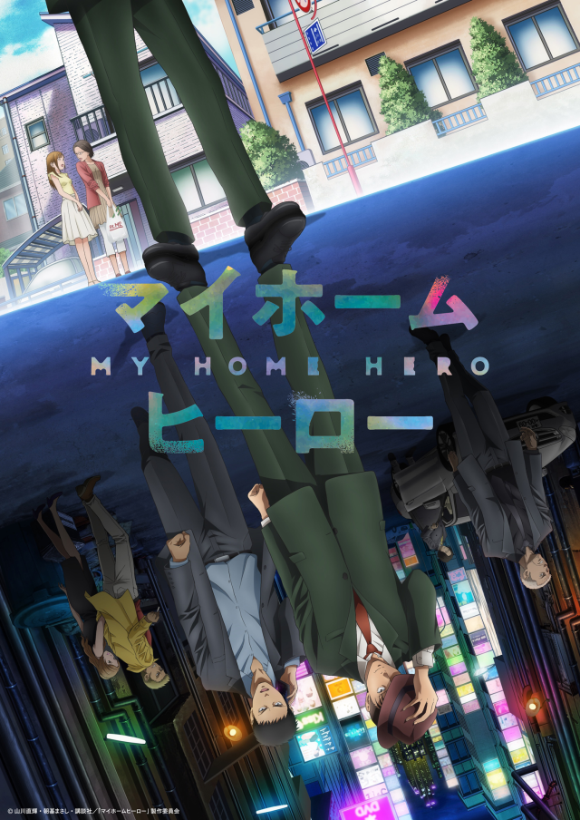

AnimeInterester
我家的英雄

故事簡介
一位不起眼的上班族，47歲的鳥栖哲雄，站在滾水熬煮的屍體前這麼想。故事回溯到僅僅幾個小時前——即使被叛逆期的女兒——零花排斥， 哲雄和心愛的妻子—歌仙仍比任何人更加期許女兒平安長大，過著日常生活。 某一天，哲雄去找獨自搬出去住的零花，發現她的臉上有被人毆打的瘀青。不管怎麼追問，零花都不肯回答。哲雄下定決心，潛入零花家，躲在衣櫥裡。他在此目睹對零花動手動腳的「小混混」男友—麻取延人。
製作人員
原作:山川直輝 / 朝基まさし
導演:亀井隆
角色設計：野口征恒
劇本統籌・劇本：喜安浩平
美術設計：阿部行夫
總作畫監督：野口征恒 / 内田裕 / 大下久馬 / 蓮生霞 / 諸葛子敬 / Song jin hee / Ryu seung cheol
3DCG：エレメントファクトリー / バイブリーアニメーションCG
音樂：川井憲次
製作:「マイホームヒーロー」製作委員会
聲優名單
鳥栖哲雄：諏訪部順一
鳥栖歌仙：大原沙耶香
鳥栖零花：白田千尋
間島恭一：伊東健人
麻取義辰：三木眞一郎
麻取延人：多田啓太
響：大久保瑠美
窪：大塚明夫
志野：山寺宏一
竹田：德石勝大
田端敏：酒卷光宏
各集標題
| 話數 | 標題 |
|---|---|
| 1 | 今天起是殺人魔 |
| 2 | 第20年的攜手合作 |
| 3 | 通往正確答案的路 |
| 4 | 暴力的世界 |
| 5 | 幸福？ |
| 6 | 歌仙的待客之道 |
| 7 | 母親與母親 |
| 8 | 蜘蛛絲 |
| 9 | 命運之日 |